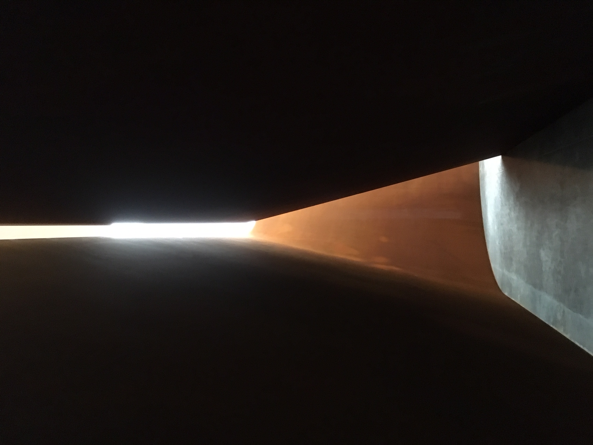
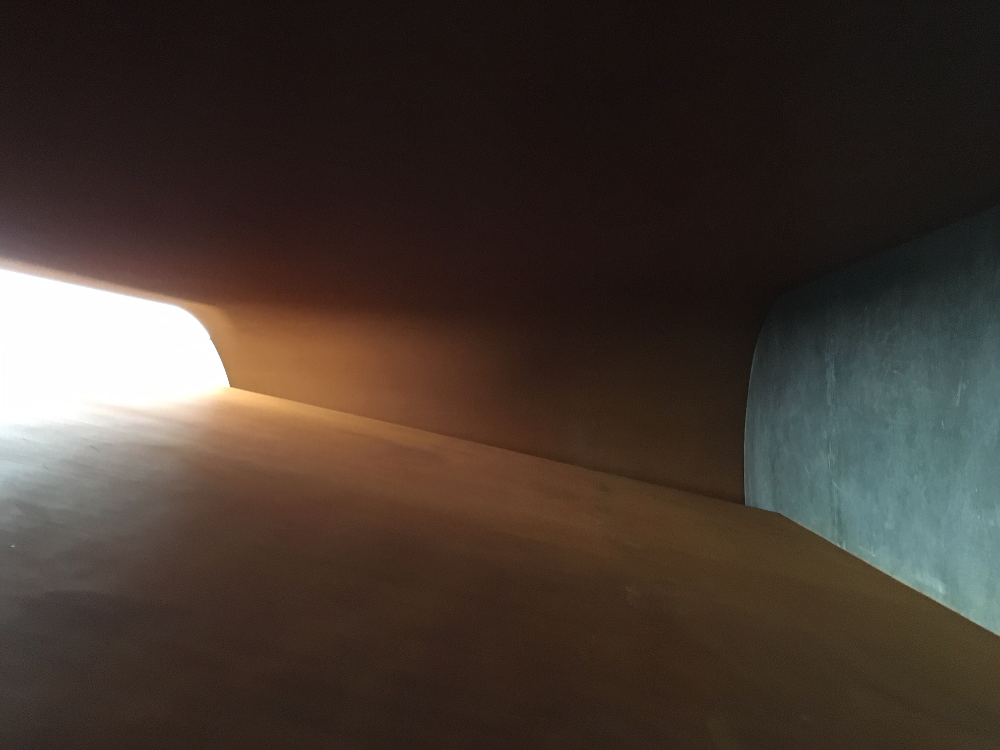
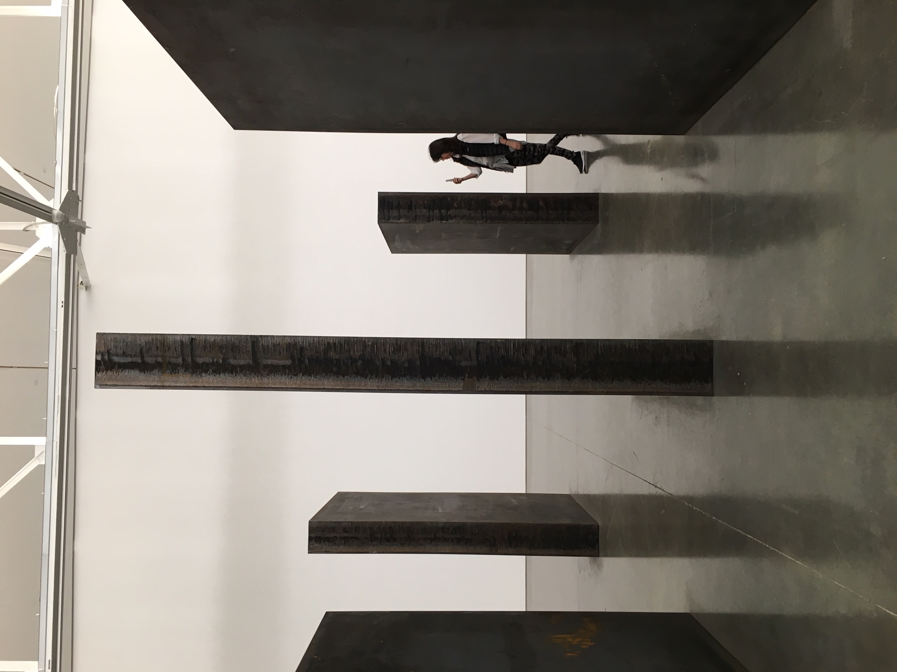
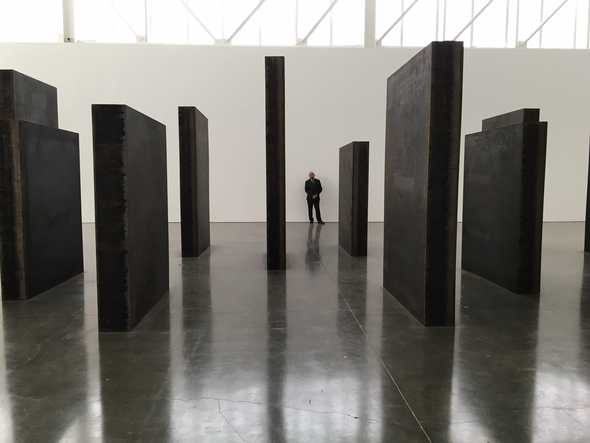

Richard Serra is an artist who is meaningful to me. Walking through a Richard Serra sculpture is a physical, spiritual, and emotional experience. The material is raw. The scale is huge. It is an experience that evokes suspense, vulnerability, fear, joy and relief. Walking through and around a Richard Serra piece is a journey with both our inner and outer selves. Other people also become part of it. It's an experience that is physical, visual and emotional in a primitive and elemental way.
One of the influential courses I took in college at the University of Michigan was taught by Rudolf Arnehim, the author of Art and Visual Perception. The basic principal I remember from this class is that visual perception and our experience of art is affected by the physical experience of moving through space and our relationship in space to the art. During these days of Covid, what I miss most is sitting in front of my favorite Jackson Pollack painting at the Met, Autumn Rhythm.
Here are some of my photos from a Richard Serra exhibit at the Gagosian Galleries in May 2016.




Two other important influences in my life are a book titled, "Art and Fear". This book articulates my beliefs. I bought this book while I was studying life drawing at the Art Students League with Robert Cenedella. Cenedella is a cool dude. It's a fascinating connection that he studied with the artist George Grosz.